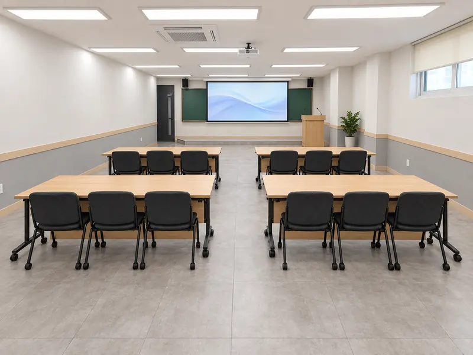
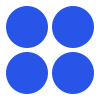
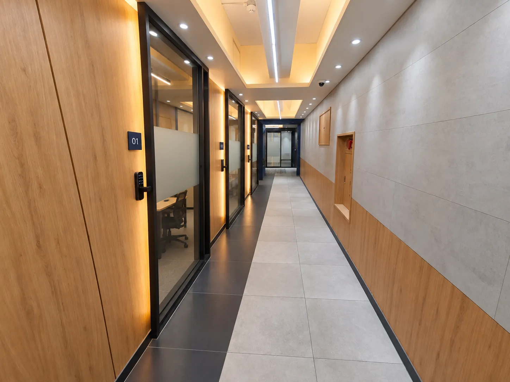
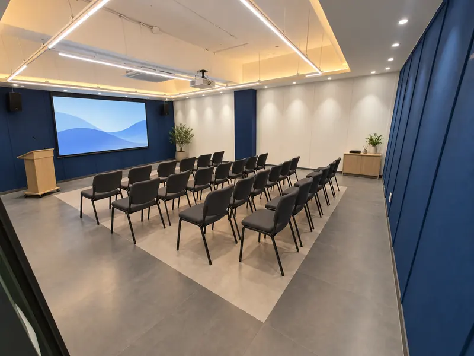
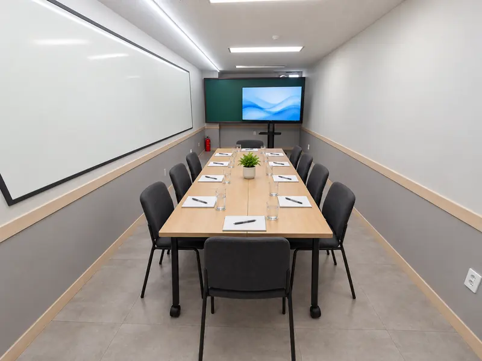
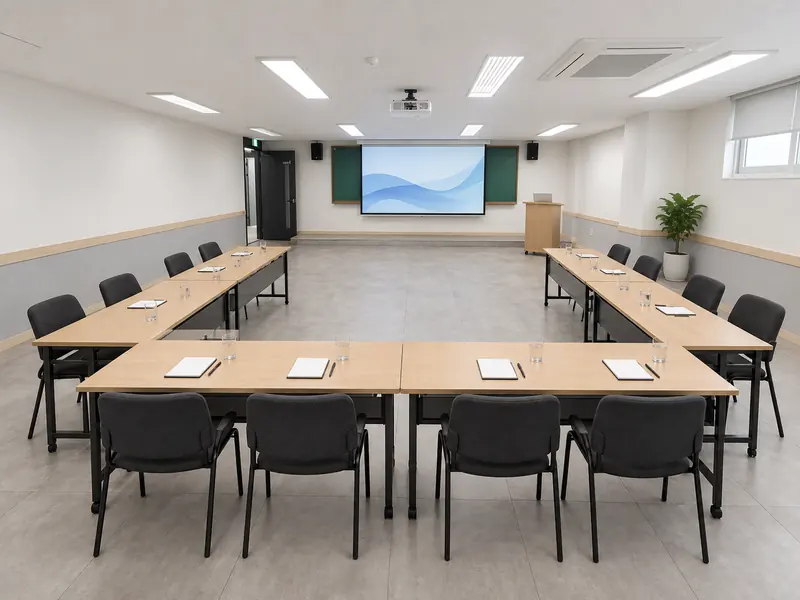
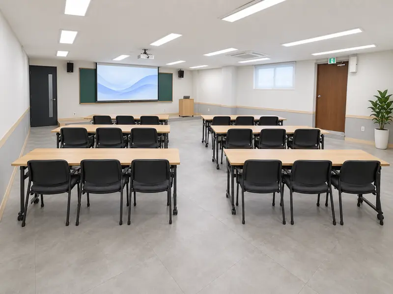
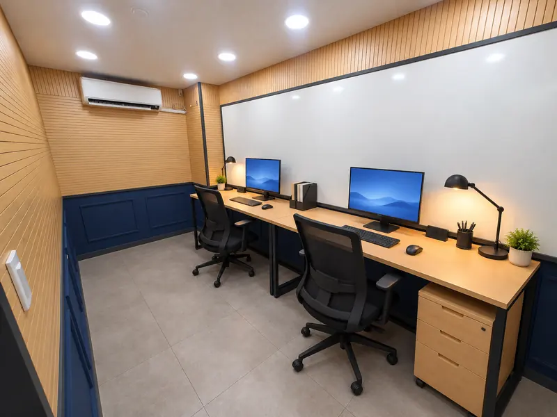

ROOM 011번룸

25~30명
세미나 · 교육 · 워크숍
대화가 시작되는 자리. 회의와 소모임, 네트워킹이 열립니다.
함께 즐기는 시간. 동아리 모임, 게임 대회, 작은 행사가 만들어집니다.
읽고 나누는 시간. 북클럽과 북콘서트, 저자와의 만남이 이어집니다.
배우고 몰입하는 시간. 스터디와 강연, 워크숍, 24시간 코워킹.

소셜팩토리는 2015년 10월 홍대 놀이터 옆 지하 공간에서 문을 연 모임공간입니다. 스터디와 동아리 모임, 원데이클래스와 플리마켓, 북콘서트와 게임 대회까지, 사람이 모이는 일이라면 무엇이든 이곳에서 만들어졌습니다.
홍대·연남·신촌·합정·인천으로 넓어졌던 공간은 코로나 시기에 모두 문을 닫았지만, 사람들의 시간과 즐거움을 기억하겠다는 마음은 그대로 남았습니다. 그 마음을 담아 건대에서 다시 시작합니다.
홍대 1호점 한 곳에서 시작해 여섯 개 지점까지 늘어났던 기록입니다. 수치는 당시 공간소개서와 지원서의 자체 집계 기준입니다.
4층 복도를 따라 다섯 개의 룸과 24시간 코워킹·스터디카페, 네 개의 독립사무실이 이어집니다. 휴게·대기 공간은 따로 두어 모임 전후에 머물 수 있습니다.


세미나 · 교육 · 워크숍

강연 · 세미나 · 설명회

회의 · 스터디 · 소모임

강연 · 교육 · 워크숍

세미나 · 교육 · 동아리 모임
자유석 코워킹 · 개인 스터디 · 24시간

월 단위 입주 · 소셜패밀리 멤버십
모임 전후 대기 · 휴식 · 음료
공간 이미지는 2026년 10월 실측 도면을 바탕으로 만든 완성 예상 이미지이며, 실제 모습은 오픈 후 사진으로 교체됩니다. 4층 평면도 보기 →
강연과 기업 워크숍부터 북클럽, 원데이클래스, 보드게임 모임, 조명을 끄고 보는 영화 상영까지. 소셜팩토리 건대에서 열릴 수 있는 모임을 서른여덟 장면으로 그려 봤습니다.
홍대 시절 소셜팩토리는 강사와 모임장에게 공간을 열고 모객과 홍보를 함께 맡았습니다. 건대에서도 같은 방식으로 프로그램과 파트너를 모읍니다.
2017년 소셜팩토리가 만든 말, 스프레드 스페이스. 홍대의 지하 한 칸에서 시작한 문화와 운영 경험이 여러 동네로 퍼졌고, 이제 건대에서 다음 장을 엽니다.